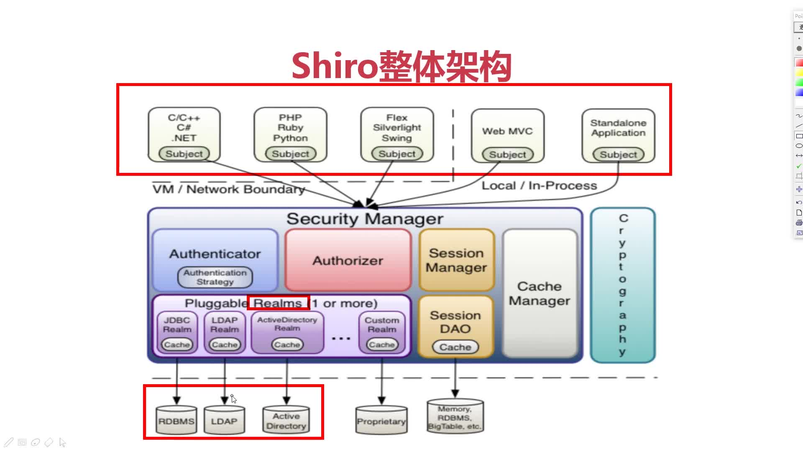

@(工作笔记)
shiro-record

[TOC]
Spring与Shiro加入DefaultAdvisorAutoProxyCreator后引起事务失效问题
/**
* Shiro注解
* DefaultAdvisorAutoProxyCreator和AuthorizationAttributeSourceAdvisor。
* 用了spring mvc的话就需要把这两个bean定义写在相应的springmvc-servlet.xml文件中
*/
@Bean
@DependsOn(value = "lifecycleBeanPostProcessor")
public DefaultAdvisorAutoProxyCreator getDefaultAdvisorAutoProxyCreator() {
DefaultAdvisorAutoProxyCreator creator = new DefaultAdvisorAutoProxyCreator();
/**
* setUsePrefix(false)用于解决一个奇怪的bug。在引入spring aop的情况下。
* 在@Controller注解的类的方法中加入@RequiresRole注解，会导致该方法无法映射请求，导致返回404。 加入这项配置能解决这个bug
*/
creator.setUsePrefix(false);
creator.setProxyTargetClass(true);
return creator ;
}
@Autowired
@Bean(name = "authorizationAttributeSourceAdvisor")
public AuthorizationAttributeSourceAdvisor authorizationAttributeSourceAdvisor(SecurityManager securityManager) {
AuthorizationAttributeSourceAdvisor authorizationAttributeSourceAdvisor
= new AuthorizationAttributeSourceAdvisor();
authorizationAttributeSourceAdvisor.setSecurityManager(securityManager);
return authorizationAttributeSourceAdvisor;
}
由于ShiroFilterFactoryBean实现了FactoryBean接口，所以它会提前被初始化。又因为SecurityManager，SecurityManager依赖于Realm实现类、Realm实现类又依赖于UserService，所以引发所有相关的bean提前初始化，导致UserService并没有被事务AOP包裹着. 所以就出现了事务无效的问题.
解决方案
在Realm中Service声明上加入@Lazy注解，延迟Realm实现中Service对象的初始化时间，这样就可以保证Service实际初始化的时候会被BeanPostProcessor拦截，创建具有事务功能的代理对象。
public final class AccountRealm extends AuthorizingRealm {
private final static Logger logger = LogManager.getLogger(AccountRealm.class);
@Autowired
@Lazy
private UserService userService;
@Autowired
@Lazy
private ConfigService configService;